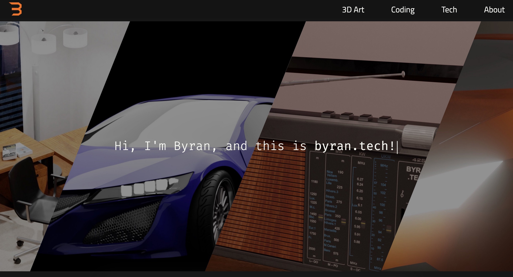

My latest technological breakthroughs:
Hi, I'm Byran, and this is byran.tech!
byran@byran.tech -zsh — ttys000
Last login: on ttys000
~ » whoami
byran
~ » whereami
https://www.byran.tech
~ » ls
about_me
stuff_i_do
languages_i_write
what_i_use
current_projects
what_is_on_each_page
~ » ./about_me
Hello! 👋 I am Byran! I am the developer of this website (welcome!)
and I love technology. Enjoy!
~ » ./what_is_on_each_page
Main Page: Intro and some new stuff I made!
3D Art: My Blender Renders :)
Coding: Programs I have made, all open source on GitHub 👨‍💻
Tech: My tech articles and tutorials, which I try my best to keep them up-to-date!
About: My about page, where I talk about the boring and cool stuff regarding my
website.
~ » ./stuff_i_do
Git and GitHub
macOS PowerUser ⚡️
PCB Design 📟
Tech Support ğŸ“
Blender 3D ğŸ›
- Modeling and CG
- Animation and Rigging
Unity Game Developer
Type Quite Fast (QWERTY layout) ⚡️⌨️
Linux Administrator 🖥🎛💻
- Ubuntu
- OpenMediaVault
- LAMP Server
- Raspberry Pi
Custom Mechanical Keyboards ⌨️
Drone Flying 🚁
~ » ./current_projects
ByranTK-Alpha (bt keyboard)
Studying for random things relating to electrical engineering
This Website (as always)
~ » ./languages_i_write
Python 🐍
HTML 📑
CSS 🎨
JavaScript 🪄
BASH 📺
Java ☕️
~ » ./what_i_use
Dracula Theme 🧛🏻‍♂️
macOS Terminal.app 📟
KiCAD EDA ⌮
Visual Studio Code and Micro 👨‍💻
Blender 3D ğŸ›
FreeCAD ⛏
Like how this terminal looks? See what's used to make it here!

The new, redesigned byran.tech - new from every angle.

Blender topology and shading experiments

Vintage Radio